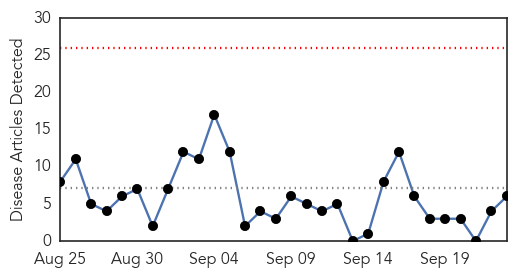
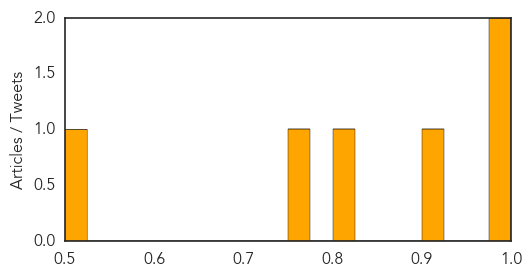

Bubonic Plague
30-Day Web Trend
0 alerts, 0 warnings
30-Day Twitter Trend
0 alerts, 0 warnings

Article Locations

Article Confidences

Top Articles:
-
No articles found for Sep 23, 2014
Top Tweets:
-
No tweets found for Sep 23, 2014
Cholera
30-Day Web Trend
0 alerts, 0 warnings

30-Day Twitter Trend
0 alerts, 0 warnings
Article Locations
Article Confidences
Top Articles:
- 0.983
- Ashanti Region Records Few Cases Of Cholera
- 0.981
- Govt declares war on cholera as 128 die
- 0.911
- Oda hospital records 49 cholera cases
- 0.824
- Oda Hospital Records 49 Cholera Cases
- 0.757
- UTSA microbiologists discover regulatory thermometer that controls cholera
- 0.512
- China Red Cross Supports Fight Against Cholera in Ghana
Top Tweets:
-
No tweets found for Sep 23, 2014